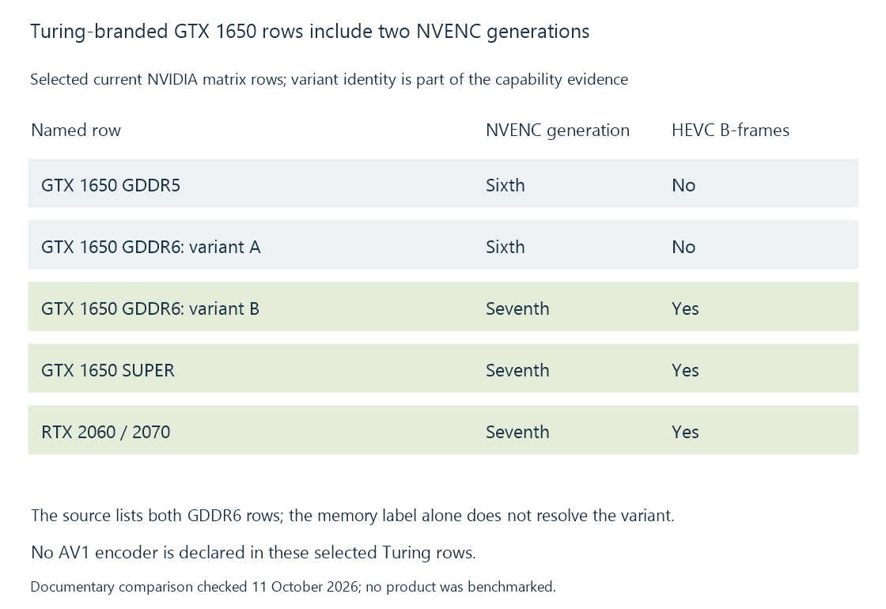

NVIDIA Turing media capabilities
Turing-family NVIDIA products include differing encoder implementations, so selected codec tools and engine generation must be read from the exact product row.
Turing is a useful example of why an architecture label cannot replace the exact media-engine row. NVIDIA's current matrix lists GTX 1650 variants with different NVENC generations and HEVC B-frame support.
The product variant determines the feature evidence.
Compare the published variants
Selected encoder entries are:
| Named matrix row | NVENC generation | HEVC B-frame encoding |
|---|---|---|
| GTX 1650 GDDR5 | Sixth | No |
| GTX 1650 GDDR6: listed sixth-generation variant | Sixth | No |
| GTX 1650 GDDR6: listed seventh-generation variant | Seventh | Yes |
| GTX 1650 SUPER | Seventh | Yes |
| RTX 2060 / 2070 | Seventh | Yes |
All of those rows carry the Turing family context, but the encoder declarations differ.

A product description omitting the relevant variant therefore leaves part of the encoder question unresolved.
HEVC tools and bit depth are different properties
The selected RTX 2060 entries include HEVC ten-bit encoding and the listed B-frame feature. Those are separate capabilities: one concerns sample representation, the other a picture-coding/order tool.
The encoder still needs a suitable profile, input surface, dimensions and configuration. Its accepted output choices do not identify the decoder used for the source.
AV1 needs its own operation
The selected Turing encoder and decoder rows do not list AV1 as supported. A supported HEVC input or H.264 output does not supply an AV1 decoder or encoder.
An Emby AV1 source can consequently need another reconstruction route. A HEVC-to-H.264 session asks a different pair of supported operations.
Ampere gives the next useful AV1 decode comparison, including another exact-chip exception.
Relate the variant to the actual encoder
The selected runtime/device and initialized encoder establish which implementation the job uses. A copied feature list for a different GTX 1650 variant would not explain a missing tool on this one.
The resulting picture and rate-control choices can then be compared within the relevant encoder's supported set.
See Also
- NVIDIA Pascal media capabilities
- NVIDIA Ampere media capabilities
- NVIDIA NVENC
- How to read a hardware codec support matrix
- Hardware encoding and software encoding